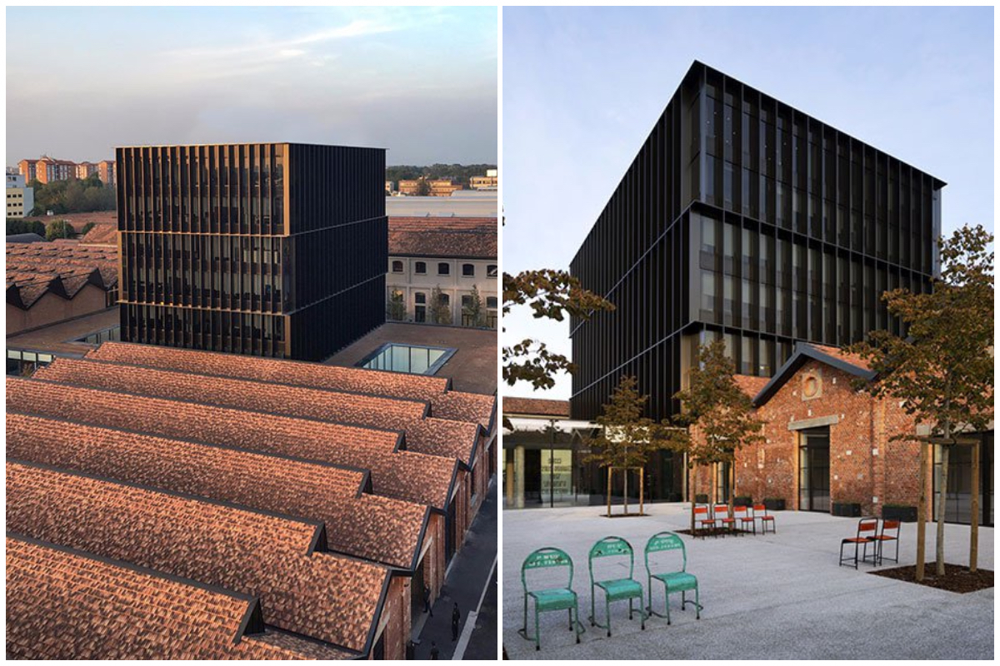
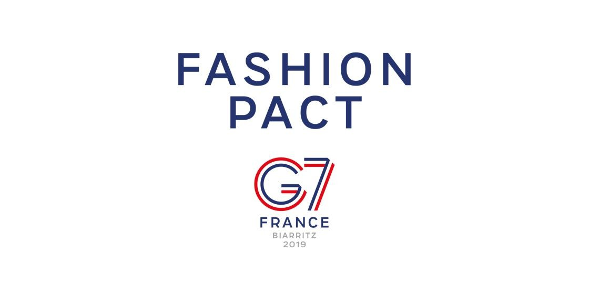

今日「永續、環保」等詞的討論程度已遠遠超越過去幾年，尤其是世界在疫情影響下靜止，人們藉此得到一些喘息的時間與空間，好好審視生活上的一切，對於時尚產業來說亦是。今日在眾多奢侈品品牌改變政策，成為環境改善的一員的風氣下，Gucci 早已成了時尚界的先鋒，力圖改變。身為永續時尚的帶動者，除誓言將在 2025 年降低 50% 的碳排放量、推出永續系列、簽署《時尚公約》外，還做了哪些事？以下為 HR 整理的 Gucci 環保十大關鍵字。
01. Gucci Equilibrium
Equilibrium 一詞表示「平衡、均衡」，從取名邏輯來看，可理解 Gucci 在永續面的願景；而 Gucci Equilibrium 圍繞在三大主軸：環境、人才與創新，力圖專注提升品牌與開雲集團在永續發展方面的透明度，同時外界解釋 Gucci 在社會責任和環境保護方面的最新訊息。 Gucci 首席執行長 Marco Bizzari 說：「Gucci Equilibrium 是我們正為地球和人類建立的平台，將代表地球和人類發聲。今天，全球品牌和企業均有責任成為社群內的積極合作夥伴，以激發改變。」
「我們不能單靠自己拯救世界，但我們必須從小事做起，沒有捷徑可走。」
Gucci 更邀請到義大利藝術家 @mp5art 為本次企劃操刀主視覺，透過簡單線條人像與地球圖示，象徵人類與自然世界的失衡。
02. 包裝
去年 11 月起，消費者便可發現 Gucci 已啟用新的環保綠色包裝設計，暗綠裝飾花紋浮印於包裝袋與紙盒上，搭配同色緞帶。品牌標識性的黑色 Gucci 字樣相當醒目。此舉也是 Gucci 為了滿足永續願景的舉措之一，不單只是再次重申環境主張，也是對品牌形象的二次塑造。品牌新聞稿中寫道，此全新包裝不論是在設計和採購原料面均秉持地球環境保護理念，原料來自永續管理的森林資源。 此外，Gucci早已設定 2030 年前消除一次性塑膠製品的企業目標，所以目前品牌所有產品包裝均不含塑膠。
03. 環保建築
永續的品牌願景不僅須從產品面著手，而各種細節均須細細考量，而品牌所落點的建築亦是。在眾多奢侈品牌中，Gucci 早於 2009 年便率先獲得 LEED 領先能源與環境設計認證，為業界創舉。LEED 為全球建築界公認一流認證系統，也是公司能執行永續發展實務的象徵，支持該公司建立一個健康、高效並且能節省成本的綠色建築環境。
Gucci 不論是在店舖或是辦公室內，均採用環保倡議以及各種節能技術降低能耗，像是推動比傳統照明更具永續性的照明方式；位於佛羅倫斯及米蘭的義大利總部採用太陽能技術，在建築頂部安裝光伏板，將陽光直接轉化為供這些場所使用的環保能源，也和所有店舖攜手合作，採取更具永續的方式回收及處理需要棄置的廢料。更於歐洲主要旗艦店與辦公場所裝設了 BMS 監察系統，以便確實追查能源消耗量。
在 2019 年，83% 的 Gucci 全球店舖、辦公室及倉庫均已使用了可再生能源，目標在 2020 年達至 100%。
04. 循環時尚起點—— Off the Grid 永續系列
Gucci Off The Grid 永續系列依據永續生產標準，選用再生、有機與生物基材料，包括利用尼龍廢料與用前/用後產生廢料而製成的 ECONYL® 再生尼龍，為第一個使用 ECONYL® 再生尼龍紗線的精品品牌，推出多款旅行箱、配飾、鞋履及成衣單品。
ECONYL® 再生尼龍紗線搜集海洋中可能傷害海洋生物的廢棄塑膠、漁網、以及紡織纖維填埋場的廢料改造而成。除此之外，Gucci Off The Grid 系列的相關用料均採用了循環材料，以及更具永續性的替代原料，如無金屬鞣革、循環滌綸紗線和襯料、循環黃銅、循環黃金和鈀金鍍層配件、以及不含溶劑的粘合劑，為進一步優化循環再生體系。 在 Gucci Off the Grid 系列生產過程中，所產生的 ECONYL® 廢料將進行回收、循環再利用，並製作新的 ECONYL® 材料，作為「Gucci-ECONYL® PRE CONSUMER FABRIC TAKE BACK PROGRAM」 （Gucci-ECONYL® 用前材料回收計畫）的一環。該系列生產出的皮革廢料也將通過 Gucci-up 循環經濟方案進行回收與再生。
廣告大片中呈現一群人居住在質樸的樹屋中，環繞在高樓林立的摩登大都會中心，透過雙手親自打造簡約的生活方式，也明示了在疫情過後，人們將遠離傳統城市生活的意願將提高，更樂於融入大自然中，即創意總監 Alessandro Michele 心目中理想的的烏托邦。 此外，Gucci Off The Grid 系列均配有經 FSC 認證的專屬包裝設計，包括飾有品牌標識的卡片，介紹產品資訊及其永續發展專案。
05. 永續皮革
品牌在生產過程中往往會留下大量廢料，而 Gucci 透過優化製程與製造效率。提出如 Scrap-less 無廢料皮革方案，旨在大幅減少皮革加工中的用水、能源和化學品消耗，在製作過程中只鞣制實際需要的皮革，最大限度減少皮革廢料的產生。 目標在 2025 年之前，讓採購過程達到農場可追溯性 100%，即可以有效追蹤到皮革來源。並達成 100%使用無金屬或無絡合金鞣制皮革材料，為一種可替代的鞣制工藝，與傳統工藝相比減少了對環境產生的影響。
06. 循環經濟
Gucci-Up 循環經濟方案透過回收利用在生產過程中產生的皮革和紡織廢料，實現可循環生產的創新方式。所謂的 Up，便是取自 Upcycle 升級再造的概念。光是 2018年到 2019 年，該專案就回收約 22 噸可重複利用皮革廢料。而在另一個升級再造的項目中，Gucci 與一家專門收集及循環再造紡織廢料的公司 Green Line 合作，讓紡織廢料能得以被重新利用。自 2015 年啟動這個合作以來，Gucci 已從供應商收集到 307 噸的廢料，而光是 2019 年就收集了 117 噸廢料。這些廢料將在全球時裝供應鏈中獲得新生命。 另一循環經濟實例，便是 Gucci 於去年 10 月宣布與二手轉售平台 The Real Real 合作，透過 Gucci 與本身循環時尚的願景相輔相成，轉售可延長已生產和已購買的產品的生命週期，讓產品重獲新生，進而減低對環境影響。

Gucci 致力於為產品尋找可替代和永續性的材料，如可再生、有機或生物型材料和再生纖維，永續性材料，並提高生產效率，最終目標是實現 100% 的循環永續生產。
07. 環境保護
自 2018 年以來，Gucci 通過品牌運營及供應鏈已完全實現碳中和，保護全球 110.2 萬公頃的森林。Gucci 2020 春夏時裝秀並獲得了永續活動國際管理標準 ISO 20121 認證，從環境、社會和經濟方面體現了活動的永續性，為環境保護帶來積極改變。 Gucci 於 2017 年在倫敦時尚學院的 Kering Talk 上宣布，自 2018 春夏系列起不再使用動物皮草製作商品，並中止其他為了動物皮草而養殖或捕捉動物的行為，表示會尋求其他方法生產高品質皮革，減少生產污染與廢料；此外，開雲集團亦設立新規範，避免採用皮革過程不損害自然生態系統、確保達到最高的動物福利標準，以維護牲畜養殖的生態永續性。當時訊息公佈時引發軒然大波，許多人認為這只是 Gucci 另一波新的行銷手法，可在 2021 年的今日，在其他品牌紛紛宣布跟進同時，Gucci 早已成了領路者。
在每當有動物出現在 Gucci 廣告中時，都會將 0.5% 的媒體預算捐贈給 The Lion’s Share 基金會。透過贊助該基金會已減少大象偷獵的行為，同時通過與企業的有機聯合，將持續保護瀕危物種及其自然棲息地。
08. Fashion Pact
時尚公約》（Fashion Pact）為時裝業與紡織業（成衣、運動、生活風格與奢侈品）企業所組成的全球聯盟，包含他們的供應商與分銷商，所有企業均致力於三大共同核心目標：減緩地球暖化、恢復生物多樣性與保護海洋。該公約為法國總統 Emmanuel Macron 交付給開雲集團董事長兼首席執行官 François-Henri Pinault 的責任，在 2019 年的法國 Biarritz 的 G7 高峰會上提交給各國元首。截至 2020 年 1 月，全球已有 250 多個品牌一同響應，約占全球三分之一時尚產業。 公約中寫道：「每年 1.5 萬億歐元的時尚產業為全球規模最大、最具活力的產業之一，同時，它也是最具影響力的，因此應在引導人們走向永續未來方面發揮關鍵作用。」
09. 氣候變遷
去年11月，Gucci 總裁兼首席執行長 Marco Bizzarri 向各行各業的首席執行長們發起挑戰，邀請他們共同參與首席執行長碳中和挑戰（CEO Carbon Neutral Challenge）專案，致力於在幾年內徹底解決溫室氣體排放問題。Bizzarri 提議將減排作為持續而首要的任務，儘管目前尚無技術和方案可以全面解決排放問題，強調企業現在仍然需要承擔相應的責任；今年一月底，首席執行官 Marco Bizzarri 便於達沃斯世界經濟論壇發布新的氣候戰略—— Natural Climate Solutions Portfolio。以減少碳排放量為核心重點，推動供應鏈轉型，對生物多樣性與氣候產生積極影響。同時，此一方案也著重在恢復關鍵的森林與紅樹林，在供應鏈內投資再生農業回饋自然。
透明度是策略成功的基石，Gucci使用 EP&L 環境損益（Environmental Profit & Loss）線上工具追蹤並評估其對環境的影響，不論是從原材料來源，到產品製造、運輸到店鋪和顧客的整條供應鏈，對於溫室氣體排放、空氣與水污染、水資源消耗、廢料產出、土地使用等各方面造成的環境影響，EP&L 均能精準衡量，既定目標是減少品牌所造成的全部環境影響，至 2025 年 EP&L 降低40%。而根據 2018 年的 EP&L 資料顯示，三年內供應鏈中的碳排放相對於整體增長量減少了 16%，足以證明品牌正朝著既定目標穩步邁進。
10. I was a Sari
除了環境訴求外，Gucci 從 2013 年開始便透過全球運動 Chime for Change 提高大眾對女童與婦女議題的意識。Gucci Equilibrium 網站上亦特別列出 I was a Sari 的人道主義專案。 I was a Sari」為 Stefano Funari 於 2013 年創辦的社會企業，代表 Gucci 以人為本的承諾，透過與印度孟買邊緣地區的婦女合作，教授她們新技能並開展傳統服飾 Sari 的循環經濟，增加工作機會並幫助他們獲得穩定收入。而在這過程中所使用到的面料與各種紡織材料都將得到循環利用，同時納入循環經濟的一環。

結語
老話一句，若真心在乎環境，請確實好好善用身邊的所有資源，避免浪費，在消費面選擇重質不重量為永遠的真諦。而今日透過實際消費支持具有環境意識的品牌，也是為我們理想中的未來投下一票。作為消費者，你擁有的影響力遠比想像中還大。